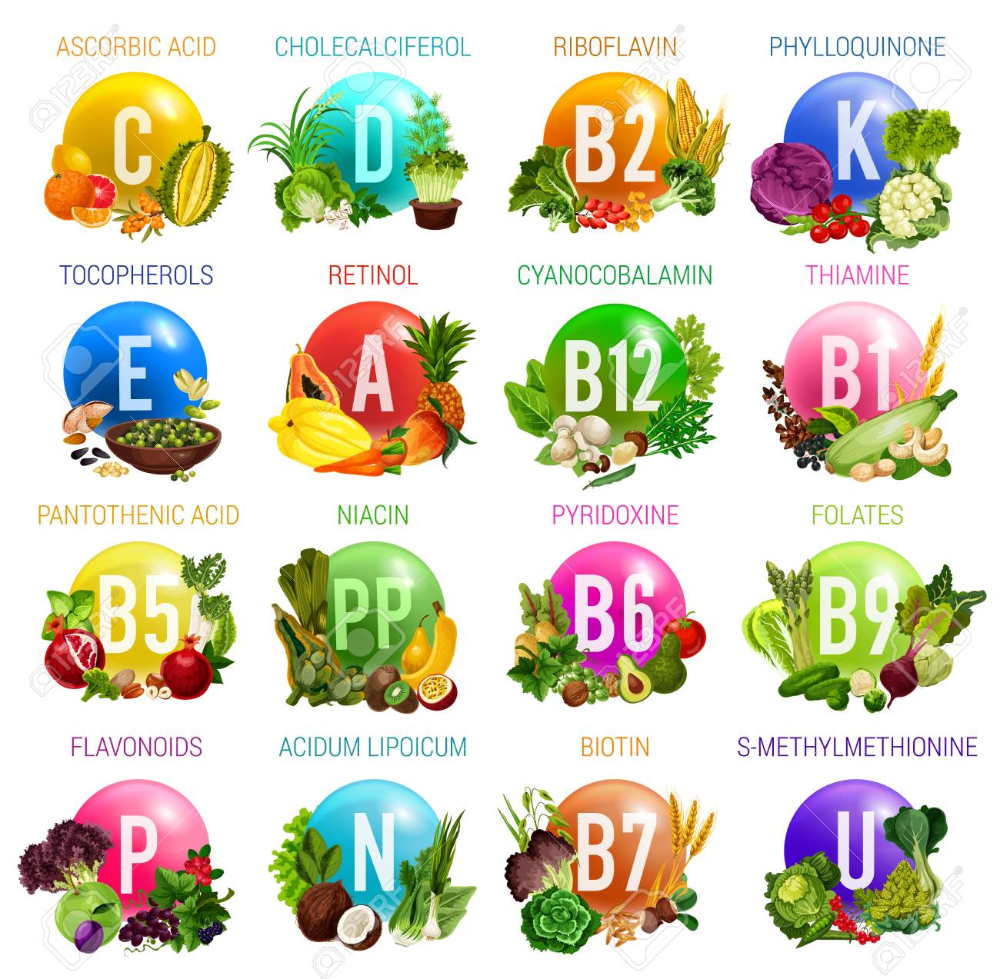

Daily Nutrition
Consume These Minerals and Vitamins Regularly for a Healthy Life
A recent study revealed that the 7 foods people consume less than the recommended amount are calcium, fiber, magnesium, potassium or vitamins A, C and E. “As a result, you won't have any major health problems,” says Alanna Moshfegh. But the recommended amounts will help maintain your health and reduce your risk of chronic disease.
Calcium to be taken daily
• Recommended: 1 gram per day.
Benefits: Important for bone and dental health
• Sources: Dairy products; bones and fish, dark green leafy vegetables.
Fiber Required Daily
• Recommended: 25 grams per day.
• Benefits: Protects against coronary heart disease and reduces the risk of diabetes.
• Sources: Fruits, vegetables, legumes, nuts, seeds, whole grains.
Magnesium Required Daily Intake
• Recommendation: 310 to 400 milligrams a day.
• Benefits: Helps maintain normal muscle and nerve functions, develop and protect bones.
• Sources: Nuts, seeds, bran, halibut and other fish.
Weight loss is one of the processes that should be careful. People who try to implement fast weight loss diets, such as fast weight loss diets, cannot get enough of the vitamins and minerals the body needs due to these excessively restrictive diets. This causes health problems. If you say I stopped losing weight, you can get the healthy body of your dreams by getting professional support instead of trying slimming cures and slimming drugs (If Not Now, When?).
Potassium Required Daily
• Suggestion: 3,500 milligrams a day.
• Benefits: Helps maintain healthy blood pressure and reduce the effects of salt; It can reduce the risk of recurrent kidney stones and possible bone loss.
• Sources: Potatoes, white beans, yogurt, soybeans, bananas.
Vitamin A to be taken daily
• Recommended: 5,000 international units per day.
• Benefits: Important for vision, red blood cell production, embryonic development and immune function.
Sources: Organ meats; oranges, carrots and green leafy vegetables.
Vitamin C to be taken daily
• Suggestion: 60 milligrams a day.
• Benefits: Acts as a disease-fighting antioxidant. It can help maintain a healthy immune system.
• Sources: Fruit and vegetables, including citrus fruits, red and green peppers, kiwi and green beans.
Vitamin E to be taken daily
• Recommended: 30 milligrams per day.
• Benefits: Acts as a disease-fighting antioxidant; can support eye health.
• Sources: Ready-to-eat cereals, some oils, almonds, peanut butter.
Sugar Needed Daily
• Recommended: For women: 25 grams. For male: 38 grams.